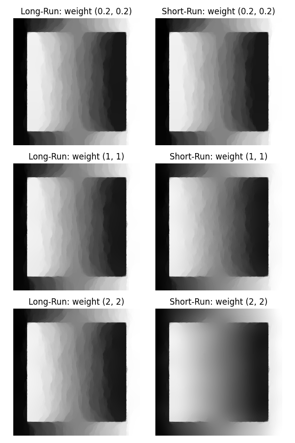

<!DOCTYPE html>
<html class="writer-html5" lang="en" >
<head>
  <meta charset="utf-8">
  
  <meta name="viewport" content="width=device-width, initial-scale=1.0">
  
  <title>05. Scaling Dependent Stepsize Problem &mdash; recon 0.0.1 documentation</title>
  

  
  <link rel="stylesheet" href="../_static/css/theme.css" type="text/css" />
  <link rel="stylesheet" href="../_static/pygments.css" type="text/css" />
  <link rel="stylesheet" href="../_static/gallery.css" type="text/css" />
  <link rel="stylesheet" href="../_static/gallery-binder.css" type="text/css" />
  <link rel="stylesheet" href="../_static/gallery-dataframe.css" type="text/css" />

  
  
  
  

  
  <!--[if lt IE 9]>
    <script src="../_static/js/html5shiv.min.js"></script>
  <![endif]-->
  
    
      <script type="text/javascript" id="documentation_options" data-url_root="../" src="../_static/documentation_options.js"></script>
        <script src="../_static/jquery.js"></script>
        <script src="../_static/underscore.js"></script>
        <script src="../_static/doctools.js"></script>
        <script src="../_static/language_data.js"></script>
    
    <script type="text/javascript" src="../_static/js/theme.js"></script>

    
    <link rel="index" title="Index" href="../genindex.html" />
    <link rel="search" title="Search" href="../search.html" />
    <link rel="prev" title="04. Total Generalized Variation" href="total_generalized_variation.html" /> 
</head>

<body class="wy-body-for-nav">

   
  <div class="wy-grid-for-nav">
    
    <nav data-toggle="wy-nav-shift" class="wy-nav-side">
      <div class="wy-side-scroll">
        <div class="wy-side-nav-search" >
          

          
            <a href="../index.html" class="icon icon-home" alt="Documentation Home"> recon
          

          
          </a>

          
            
            
              <div class="version">
                0.0.1
              </div>
            
          

          
<div role="search">
  <form id="rtd-search-form" class="wy-form" action="../search.html" method="get">
    <input type="text" name="q" placeholder="Search docs" />
    <input type="hidden" name="check_keywords" value="yes" />
    <input type="hidden" name="area" value="default" />
  </form>
</div>

          
        </div>

        
        <div class="wy-menu wy-menu-vertical" data-spy="affix" role="navigation" aria-label="main navigation">
          
            
            
              
            
            
              <p class="caption"><span class="caption-text">Getting started:</span></p>
<ul class="current">
<li class="toctree-l1 current"><a class="reference internal" href="index.html">Tutorials</a><ul class="current">
<li class="toctree-l2"><a class="reference internal" href="2d_image_smoothing.html">01. Smoothing</a></li>
<li class="toctree-l2"><a class="reference internal" href="2d_tv_segmentation.html">03. Segmentation</a></li>
<li class="toctree-l2"><a class="reference internal" href="total_generalized_variation.html">04. Total Generalized Variation</a></li>
<li class="toctree-l2 current"><a class="current reference internal" href="#">05. Scaling Dependent Stepsize Problem</a></li>
</ul>
</li>
</ul>

            
          
        </div>
        
      </div>
    </nav>

    <section data-toggle="wy-nav-shift" class="wy-nav-content-wrap">

      
      <nav class="wy-nav-top" aria-label="top navigation">
        
          <i data-toggle="wy-nav-top" class="fa fa-bars"></i>
          <a href="../index.html">recon</a>
        
      </nav>


      <div class="wy-nav-content">
        
        <div class="rst-content">
        
          


<div role="navigation" aria-label="breadcrumbs navigation">

  <ul class="wy-breadcrumbs">
    
      <li><a href="../index.html" class="icon icon-home"></a> &raquo;</li>
        
          <li><a href="index.html">Tutorials</a> &raquo;</li>
        
      <li>05. Scaling Dependent Stepsize Problem</li>
    
    
      <li class="wy-breadcrumbs-aside">
        
            
            <a href="../_sources/tutorials/scaling_problem.rst.txt" rel="nofollow"> View page source</a>
          
        
      </li>
    
  </ul>

  
  <hr/>
</div>
          <div role="main" class="document" itemscope="itemscope" itemtype="http://schema.org/Article">
           <div itemprop="articleBody">
            
  <div class="sphx-glr-download-link-note admonition note">
<p class="admonition-title">Note</p>
<p>Click <a class="reference internal" href="#sphx-glr-download-tutorials-scaling-problem-py"><span class="std std-ref">here</span></a>     to download the full example code</p>
</div>
<div class="sphx-glr-example-title section" id="scaling-dependent-stepsize-problem">
<span id="sphx-glr-tutorials-scaling-problem-py"></span><h1>05. Scaling Dependent Stepsize Problem<a class="headerlink" href="#scaling-dependent-stepsize-problem" title="Permalink to this headline">¶</a></h1>
<p>In some tests it has been noticed that the scaling of the
image has an influence on the regularized final result.
In this tutorial an example for the occurrence of such effects is shown.</p>
<p>A grey image is created and viewed once in area [0, 255] and once in area [0, 1].
The relation of the weighting between dataterm and regularization
remains the same, but is adjusted in its absolute value too.</p>
<div class="highlight-default notranslate"><div class="highlight"><pre><span></span><span class="kn">import</span> <span class="nn">numpy</span> <span class="k">as</span> <span class="nn">np</span>
<span class="kn">from</span> <span class="nn">recon.interfaces</span> <span class="kn">import</span> <span class="n">Smoothing</span>
<span class="kn">import</span> <span class="nn">matplotlib.pyplot</span> <span class="k">as</span> <span class="nn">plt</span>
<span class="kn">from</span> <span class="nn">pylops</span> <span class="kn">import</span> <span class="n">Gradient</span>

<span class="c1"># build image</span>
<span class="n">size</span><span class="p">,</span> <span class="n">small_size</span> <span class="o">=</span> <span class="mi">256</span><span class="p">,</span> <span class="mi">200</span>
<span class="n">scaled_image</span> <span class="o">=</span> <span class="n">np</span><span class="o">.</span><span class="n">reshape</span><span class="p">(</span><span class="n">np</span><span class="o">.</span><span class="n">array</span><span class="p">([(</span><span class="n">x</span><span class="o">/</span><span class="n">size</span><span class="p">)</span> <span class="k">for</span> <span class="n">x</span> <span class="ow">in</span> <span class="nb">range</span><span class="p">(</span><span class="n">size</span><span class="p">)]</span><span class="o">*</span><span class="n">size</span><span class="p">),</span> <span class="p">(</span><span class="n">size</span><span class="p">,</span> <span class="n">size</span><span class="p">))</span>
<span class="n">scaled_image</span><span class="p">[</span><span class="mi">28</span><span class="p">:</span><span class="n">small_size</span><span class="o">+</span><span class="mi">28</span><span class="p">,</span> <span class="mi">28</span><span class="p">:</span><span class="n">small_size</span><span class="o">+</span><span class="mi">28</span><span class="p">]</span> <span class="o">=</span> \
    <span class="n">np</span><span class="o">.</span><span class="n">reshape</span><span class="p">(</span><span class="n">np</span><span class="o">.</span><span class="n">array</span><span class="p">([(</span><span class="mi">1</span><span class="o">-</span><span class="n">x</span><span class="o">/</span><span class="n">small_size</span><span class="p">)</span><span class="k">for</span> <span class="n">x</span> <span class="ow">in</span> <span class="nb">range</span><span class="p">(</span><span class="n">small_size</span><span class="p">)]</span><span class="o">*</span><span class="n">small_size</span><span class="p">),</span> <span class="p">(</span><span class="n">small_size</span><span class="p">,</span> <span class="n">small_size</span><span class="p">))</span>
<span class="n">scaled_image</span> <span class="o">/=</span> <span class="n">np</span><span class="o">.</span><span class="n">max</span><span class="p">(</span><span class="n">scaled_image</span><span class="p">)</span>

<span class="k">assert</span> <span class="n">np</span><span class="o">.</span><span class="n">all</span><span class="p">([</span><span class="mi">0</span> <span class="o">&lt;=</span> <span class="n">np</span><span class="o">.</span><span class="n">min</span><span class="p">(</span><span class="n">scaled_image</span><span class="p">),</span> <span class="n">np</span><span class="o">.</span><span class="n">max</span><span class="p">(</span><span class="n">scaled_image</span><span class="p">)</span> <span class="o">==</span> <span class="mi">1</span><span class="p">])</span>

<span class="n">unscaled_image</span> <span class="o">=</span> <span class="n">scaled_image</span> <span class="o">*</span> <span class="mi">255</span>

<span class="n">sigma</span> <span class="o">=</span> <span class="mf">0.2</span>  <span class="c1"># the percentage portion standard deviation for normal (Gaussian) distribution.</span>

<span class="n">noise_scaled_image</span> <span class="o">=</span> <span class="n">scaled_image</span> <span class="o">+</span> <span class="n">np</span><span class="o">.</span><span class="n">random</span><span class="o">.</span><span class="n">normal</span><span class="p">(</span><span class="mi">0</span><span class="p">,</span> <span class="mf">0.2</span><span class="o">*</span><span class="n">np</span><span class="o">.</span><span class="n">max</span><span class="p">(</span><span class="n">scaled_image</span><span class="p">),</span> <span class="n">size</span><span class="o">=</span><span class="p">(</span><span class="n">size</span><span class="p">,</span> <span class="n">size</span><span class="p">))</span>
<span class="n">noise_unscaled_image</span> <span class="o">=</span> <span class="n">unscaled_image</span> <span class="o">+</span> <span class="n">np</span><span class="o">.</span><span class="n">random</span><span class="o">.</span><span class="n">normal</span><span class="p">(</span><span class="mi">0</span><span class="p">,</span> <span class="mf">0.2</span><span class="o">*</span><span class="n">np</span><span class="o">.</span><span class="n">max</span><span class="p">(</span><span class="n">unscaled_image</span><span class="p">),</span> <span class="n">size</span><span class="o">=</span><span class="p">(</span><span class="n">size</span><span class="p">,</span> <span class="n">size</span><span class="p">))</span>
</pre></div>
</div>
<p>…</p>
<div class="highlight-default notranslate"><div class="highlight"><pre><span></span><span class="n">weights</span> <span class="o">=</span> <span class="p">[(</span><span class="mf">0.001</span><span class="p">,</span> <span class="mf">0.2</span><span class="p">),</span> <span class="p">(</span><span class="mi">1</span><span class="p">,</span> <span class="mf">0.2</span><span class="p">),</span> <span class="p">(</span><span class="mf">0.005</span><span class="p">,</span> <span class="mi">1</span><span class="p">)]</span>

<span class="n">rows</span> <span class="o">=</span> <span class="p">[</span><span class="s1">&#39;</span><span class="si">{}</span><span class="s1">&#39;</span><span class="o">.</span><span class="n">format</span><span class="p">(</span><span class="n">row</span><span class="p">)</span> <span class="k">for</span> <span class="n">row</span> <span class="ow">in</span> <span class="n">weights</span><span class="p">]</span>

<span class="n">f</span> <span class="o">=</span> <span class="n">plt</span><span class="o">.</span><span class="n">figure</span><span class="p">(</span><span class="n">figsize</span><span class="o">=</span><span class="p">(</span><span class="mi">6</span><span class="p">,</span> <span class="mi">3</span><span class="o">*</span><span class="nb">len</span><span class="p">(</span><span class="n">weights</span><span class="p">)))</span>


<span class="k">for</span> <span class="n">i</span><span class="p">,</span> <span class="n">weight</span> <span class="ow">in</span> <span class="nb">enumerate</span><span class="p">(</span><span class="n">weights</span><span class="p">):</span>
    <span class="n">tv_scaled_obj</span> <span class="o">=</span> <span class="n">Smoothing</span><span class="p">(</span><span class="n">domain_shape</span><span class="o">=</span><span class="n">scaled_image</span><span class="o">.</span><span class="n">shape</span><span class="p">,</span> <span class="n">reg_mode</span><span class="o">=</span><span class="s1">&#39;tv&#39;</span><span class="p">,</span> <span class="n">lam</span><span class="o">=</span><span class="n">weight</span><span class="p">[</span><span class="mi">0</span><span class="p">],</span> <span class="n">alpha</span><span class="o">=</span><span class="n">weight</span><span class="p">[</span><span class="mi">1</span><span class="p">],</span> <span class="n">tau</span><span class="o">=</span><span class="mf">0.3</span><span class="p">)</span>
    <span class="n">scaled_tv_solution</span> <span class="o">=</span> <span class="n">tv_scaled_obj</span><span class="o">.</span><span class="n">solve</span><span class="p">(</span><span class="n">scaled_image</span><span class="p">,</span> <span class="n">max_iter</span><span class="o">=</span><span class="mi">350</span><span class="p">)</span>

    <span class="n">tv_unscaled_obj</span> <span class="o">=</span> <span class="n">Smoothing</span><span class="p">(</span><span class="n">domain_shape</span><span class="o">=</span><span class="n">scaled_image</span><span class="o">.</span><span class="n">shape</span><span class="p">,</span> <span class="n">reg_mode</span><span class="o">=</span><span class="s1">&#39;tv&#39;</span><span class="p">,</span> <span class="n">lam</span><span class="o">=</span><span class="n">weight</span><span class="p">[</span><span class="mi">0</span><span class="p">],</span> <span class="n">alpha</span><span class="o">=</span><span class="n">weight</span><span class="p">[</span><span class="mi">1</span><span class="p">],</span> <span class="n">tau</span><span class="o">=</span><span class="mf">0.3</span><span class="p">)</span>
    <span class="n">unscaled_tv_solution</span> <span class="o">=</span> <span class="n">tv_unscaled_obj</span><span class="o">.</span><span class="n">solve</span><span class="p">(</span><span class="n">unscaled_image</span><span class="p">,</span> <span class="n">max_iter</span><span class="o">=</span><span class="mi">350</span><span class="p">)</span>


    <span class="n">f</span><span class="o">.</span><span class="n">add_subplot</span><span class="p">(</span><span class="mi">3</span><span class="p">,</span> <span class="mi">2</span><span class="p">,</span> <span class="p">(</span><span class="n">i</span><span class="p">)</span><span class="o">*</span><span class="mi">2</span><span class="o">+</span><span class="mi">1</span><span class="p">)</span>
    <span class="n">plt</span><span class="o">.</span><span class="n">gray</span><span class="p">()</span>
    <span class="n">plt</span><span class="o">.</span><span class="n">axis</span><span class="p">(</span><span class="s1">&#39;off&#39;</span><span class="p">)</span>
    <span class="n">plt</span><span class="o">.</span><span class="n">imshow</span><span class="p">(</span><span class="n">scaled_tv_solution</span><span class="p">)</span>
    <span class="n">plt</span><span class="o">.</span><span class="n">title</span><span class="p">(</span><span class="s2">&quot;Scaled &quot;</span> <span class="o">+</span> <span class="nb">str</span><span class="p">(</span><span class="n">weight</span><span class="p">))</span>
    <span class="n">f</span><span class="o">.</span><span class="n">add_subplot</span><span class="p">(</span><span class="mi">3</span><span class="p">,</span> <span class="mi">2</span><span class="p">,</span> <span class="p">(</span><span class="n">i</span><span class="o">+</span><span class="mi">1</span><span class="p">)</span><span class="o">*</span><span class="mi">2</span><span class="p">)</span>

    <span class="n">plt</span><span class="o">.</span><span class="n">gray</span><span class="p">()</span>
    <span class="n">plt</span><span class="o">.</span><span class="n">imshow</span><span class="p">(</span><span class="n">unscaled_tv_solution</span><span class="p">)</span>
    <span class="n">plt</span><span class="o">.</span><span class="n">title</span><span class="p">(</span><span class="s2">&quot;Unscaled &quot;</span> <span class="o">+</span> <span class="nb">str</span><span class="p">(</span><span class="n">weight</span><span class="p">))</span>
    <span class="n">plt</span><span class="o">.</span><span class="n">axis</span><span class="p">(</span><span class="s1">&#39;off&#39;</span><span class="p">)</span>
<span class="n">plt</span><span class="o">.</span><span class="n">tight_layout</span><span class="p">()</span>
<span class="n">plt</span><span class="o">.</span><span class="n">show</span><span class="p">()</span>
</pre></div>
</div>

<p class="sphx-glr-script-out">Out:</p>
<div class="sphx-glr-script-out highlight-none notranslate"><div class="highlight"><pre><span></span>Primal-Dual Algorithm: [                                        ]--------------------]
Primal-Dual Algorithm: [                                        ]--------------------]
Primal-Dual Algorithm: [                                        ]--------------------]
Primal-Dual Algorithm: [                                        ]-]
early stopping!Primal-Dual Algorithm: [                                        ]--------------------]
Primal-Dual Algorithm: [                                        ]--------------------]
</pre></div>
</div>
<p>Gradient Verification
To check there are no elemiation/condition things on the Gradient Operator:</p>
<div class="highlight-default notranslate"><div class="highlight"><pre><span></span><span class="n">grad</span> <span class="o">=</span> <span class="n">Gradient</span><span class="p">(</span><span class="n">dims</span><span class="o">=</span><span class="p">(</span><span class="n">size</span><span class="p">,</span> <span class="n">size</span><span class="p">),</span> <span class="n">edge</span><span class="o">=</span><span class="kc">True</span><span class="p">,</span> <span class="n">kind</span><span class="o">=</span><span class="s1">&#39;backward&#39;</span><span class="p">)</span>
<span class="n">scaled_gradient</span> <span class="o">=</span> <span class="n">grad</span> <span class="o">*</span> <span class="n">noise_scaled_image</span><span class="o">.</span><span class="n">ravel</span><span class="p">()</span>
<span class="n">unscaled_gradient</span> <span class="o">=</span> <span class="n">grad</span> <span class="o">*</span> <span class="n">noise_unscaled_image</span><span class="o">.</span><span class="n">ravel</span><span class="p">()</span>

<span class="n">scaled_reconstruction</span> <span class="o">=</span> <span class="n">np</span><span class="o">.</span><span class="n">reshape</span><span class="p">(</span><span class="n">grad</span> <span class="o">/</span> <span class="n">scaled_gradient</span><span class="p">,</span> <span class="p">(</span><span class="n">size</span><span class="p">,</span> <span class="n">size</span><span class="p">))</span>
<span class="n">unscaled_reconstruction</span> <span class="o">=</span> <span class="n">np</span><span class="o">.</span><span class="n">reshape</span><span class="p">(</span><span class="n">grad</span> <span class="o">/</span> <span class="n">unscaled_gradient</span><span class="p">,</span> <span class="p">(</span><span class="n">size</span><span class="p">,</span> <span class="n">size</span><span class="p">))</span>

<span class="k">assert</span> <span class="nb">abs</span><span class="p">(</span><span class="n">np</span><span class="o">.</span><span class="n">linalg</span><span class="o">.</span><span class="n">norm</span><span class="p">(</span><span class="n">scaled_reconstruction</span> <span class="o">-</span> <span class="n">noise_scaled_image</span><span class="p">)</span> <span class="o">-</span>
           <span class="n">np</span><span class="o">.</span><span class="n">linalg</span><span class="o">.</span><span class="n">norm</span><span class="p">((</span><span class="n">unscaled_reconstruction</span> <span class="o">-</span> <span class="n">noise_unscaled_image</span><span class="p">)</span><span class="o">/</span><span class="mi">255</span><span class="p">)</span> <span class="o">&lt;</span> <span class="mi">1</span><span class="p">)</span>

<span class="n">scaled_reconstruction</span> <span class="o">=</span> <span class="n">grad</span><span class="o">.</span><span class="n">H</span> <span class="o">/</span> <span class="p">(</span><span class="n">grad</span><span class="o">.</span><span class="n">H</span> <span class="o">*</span> <span class="n">scaled_gradient</span><span class="p">)</span>
<span class="n">unscaled_reconstruction</span> <span class="o">=</span> <span class="n">grad</span><span class="o">.</span><span class="n">H</span> <span class="o">/</span> <span class="p">(</span><span class="n">grad</span><span class="o">.</span><span class="n">H</span> <span class="o">*</span> <span class="n">unscaled_gradient</span><span class="p">)</span>

<span class="k">assert</span><span class="p">(</span><span class="nb">abs</span><span class="p">(</span><span class="n">np</span><span class="o">.</span><span class="n">linalg</span><span class="o">.</span><span class="n">norm</span><span class="p">(</span><span class="n">scaled_reconstruction</span> <span class="o">-</span> <span class="n">scaled_gradient</span><span class="p">)</span> <span class="o">-</span>
           <span class="n">np</span><span class="o">.</span><span class="n">linalg</span><span class="o">.</span><span class="n">norm</span><span class="p">((</span><span class="n">unscaled_reconstruction</span> <span class="o">-</span> <span class="n">unscaled_gradient</span><span class="p">)</span><span class="o">/</span><span class="mi">255</span><span class="p">))</span> <span class="o">&lt;</span> <span class="mi">1</span><span class="p">)</span>
</pre></div>
</div>
<p>Conclusion
The Prox-Param tau is dependent on input scale.
Therefore the calc method must be adapted in future versions.</p>
<p class="sphx-glr-timing"><strong>Total running time of the script:</strong> ( 0 minutes  15.354 seconds)</p>
<div class="sphx-glr-footer class sphx-glr-footer-example docutils container" id="sphx-glr-download-tutorials-scaling-problem-py">
<div class="sphx-glr-download sphx-glr-download-python docutils container">
<p><a class="reference download internal" download="" href="../_downloads/22e0423357a9184fe5e7605f0b3a8bec/scaling_problem.py"><code class="xref download docutils literal notranslate"><span class="pre">Download</span> <span class="pre">Python</span> <span class="pre">source</span> <span class="pre">code:</span> <span class="pre">scaling_problem.py</span></code></a></p>
</div>
<div class="sphx-glr-download sphx-glr-download-jupyter docutils container">
<p><a class="reference download internal" download="" href="../_downloads/056a59f9cfab33da27066dfc80b8d1e5/scaling_problem.ipynb"><code class="xref download docutils literal notranslate"><span class="pre">Download</span> <span class="pre">Jupyter</span> <span class="pre">notebook:</span> <span class="pre">scaling_problem.ipynb</span></code></a></p>
</div>
</div>
<p class="sphx-glr-signature"><a class="reference external" href="https://sphinx-gallery.github.io">Gallery generated by Sphinx-Gallery</a></p>
</div>


           </div>
           
          </div>
          <footer>
  
    <div class="rst-footer-buttons" role="navigation" aria-label="footer navigation">
      
      
        <a href="total_generalized_variation.html" class="btn btn-neutral float-left" title="04. Total Generalized Variation" accesskey="p" rel="prev"><span class="fa fa-arrow-circle-left"></span> Previous</a>
      
    </div>
  

  <hr/>

  <div role="contentinfo">
    <p>
        
        &copy; Copyright 2020, Lucas Plagwitz

    </p>
  </div>
    
    
    
    Built with <a href="http://sphinx-doc.org/">Sphinx</a> using a
    
    <a href="https://github.com/rtfd/sphinx_rtd_theme">theme</a>
    
    provided by <a href="https://readthedocs.org">Read the Docs</a>. 

</footer>

        </div>
      </div>

    </section>

  </div>
  

  <script type="text/javascript">
      jQuery(function () {
          SphinxRtdTheme.Navigation.enable(true);
      });
  </script>

  
  
    
   

</body>
</html>